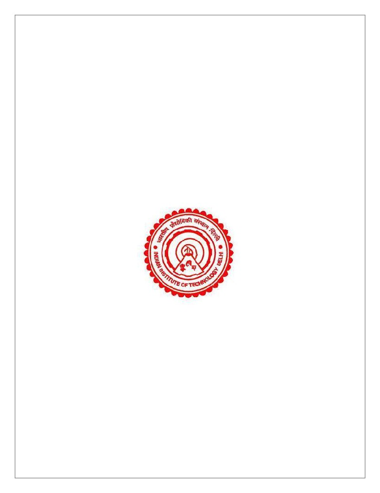
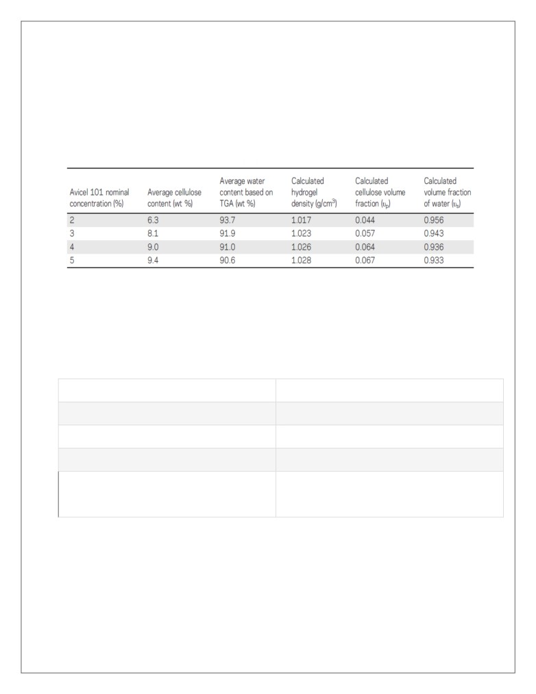
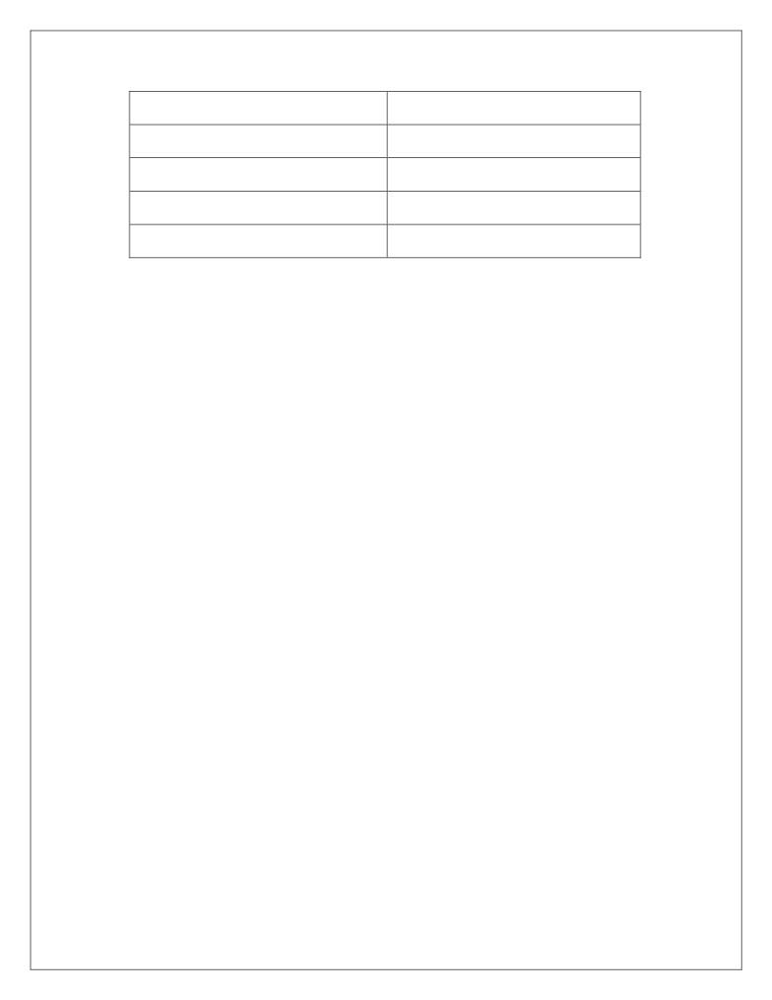
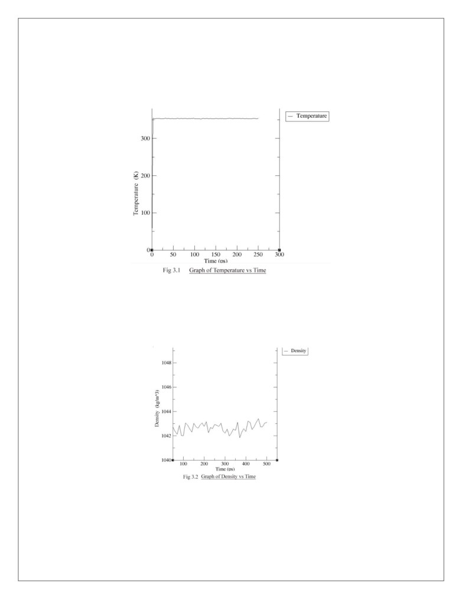
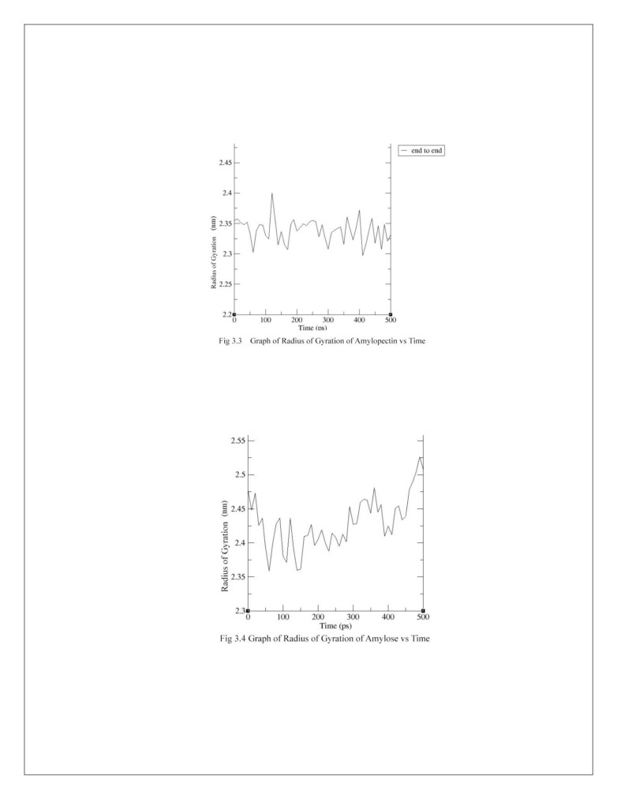

Starch composite Hydrogels for Waste-
Water Treatment
DISA- Design Innovation Summer Award
Summer of 2018
May ’18 - July ‘18
Proposed By:
I.
Rohan Yuttham
(2017ME10605)
II.
Arpit Agrawal
(2017ME10566)
III.
Aman Kumar
(2017CH10196)
Under the supervision of:
Dr. Gaurav Goel
Table of Contents
1. Abstract
2. Excerpt of the work done in the project
3. Analysis
4. Future Aspects and Conclusion
5. Online References
6. Appendix
1. Abstract
The central goal of the project was to study the interaction between thermo-plastic
starch, water, and clay nano-particles in a simulated environment.
We prepared a starch system from Amylose, Amylopectin, Sorbitol and water. The
hydrogel system thus prepared underwent equilibration steps and was brought at
desired levels of temperature, pressure and density values.

2. Excerpt of the work done in the project
1. To accomplish our task, we are required to make a hydrogel system with
percentage composition(w/w) as-
a. TPS-10%
b. Water-90%
Table1. Volume Fraction of Cellulose and Water in Swollen Hydrogels
2. We aimed to prepare the final hydrogel in a cubic box of side length 23 nm
equivalent to volume of 12167nm3.
First, we need to find the weight of thermos-plastic starch using the above
data.
From previous research work done, we had the composition of TPS as -
Compounds
#mols
Amylose
90
Amylopectin
42
Sorbitol
4633
Water
256X13 =3328
Table 2. The composition of TPS
Finally, we’ll get number of moles of the constituents as 0.23 times the previous
one.
*The calculations are given in Appendix
This gives:

Compounds
#mols
Amylopectin
10
Amylose
21
Sorbitol
1066
Water
4X256=1024
Table 3. New Composition of TPS
3.
These number of chains of the molecules are packed using the software
“Packmol”.
The output is a .pdb file.
*The procedure is given in Appendix.
4.
Now we prepared a correct topology for thermo-plastic starch(TPS) from
available coordinate files of
• Amylose,
• Amylopectin, and
• Sorbitol.
*The procedure is mentioned in the Appendix.
5.
Now, simulation runs are to be started.
First step is solvation of the box. We did this keeping the box size unchanged.
(The TPS was already packed such that we didn’t needed to change the size
before solvation)
No. of water molecules added - 245,972
Weight of water molecules added - 7.35X10-18g
Percentage of water(w/w) =85%(in the new hydrogel system just prepared) which
is close to our expected value of 90%.
6.
Secondly, we did energy minimization of the solvated system.
7.
It was followed by NVT and NPT steps.
Temperature=353K (mentioned in nvt.mdp)
Pressure=1atm(mentioned in npt.mdp)
*The procedure with commands used during equilibration steps are given in Appendix.
8. After completion of the two equilibration phases, the system was well-equilibrated
at the desired temperature and pressure.
9. We are now ready to release the position restraints and run production MD for
data collection.
Note: The temperature, pressure, simulation time and other parameters are stored in the .mdp script. The parameters
were decided based on discussions.

3. Analysis
3.1 Temperature after NVT step
The desired temperature was 353K and from Fig 3.1, the average temperature came
out as 352.663K.
3.2 Density(ρ)
From Fig 3.2, ρavg = 1.042g/cm3 which lies in the expected range (1-1.1 g/cm3).

3.3 Radius of Gyration*Definition in Appendix
3.3.1 Amylopectin
From fig 3.3, Rg,avg of amylopectin came out to be 2.730 nm. This is close to the
Rg,avg of amylopectin of Akash system which was 2.5 nm.
3.3.2 Amylose
Rg,avg of Amylose is 1.472 nm.
4. Future aspects and conclusion
• The equilibrated system of the hydrogel prepared can be used as an adsorbent
when simulated with clay nanoparticles with the clay nanoparticles and heavy
metals behaving as adsorbates.
• The surface of clay MMT can adsorb certain heavy metal particles on its surface.
5. Online References
1.https://onlinelibrary.wiley.com/doi/abs/10.1002/app.38052
2.https://www.sciencedirect.com/science/article/pii/S1385894714000904
3.https://link.springer.com/article/10.1023%2FA%3A1022308705231
4.https://www.sciencedirect.com/science/article/pii/S0308814606003074
5.https://www.sciencedirect.com/science/article/pii/S2090123213000969
6. Appendix
1.
Pack using Packmol
•
Put the .pdb files of Amylose, Amylopectin, Sorbitol and water in the
Packmol folder.
•
Prepare an input.inp file using the number of chains as:
# A mixture of Amylopectin, Amylose, Sorbitol and Water
tolerance 2.0
filetype - pdb
output mixture.pdb
structure Amylose.pdb
number 21
inside box 0. 0. 0. 230. 230. 230.
end structure
structure Amylopectine.pdb
number 10
inside box 0. 0. 0. 230. 230. 230.
end structure
structure sorbitol_e.pdb
number 1066
inside box 0. 0. 0. 230. 230. 230.
end structure
structure water.pdb
number 4
inside box 0. 0. 0. 230. 230. 230.
end structure
•
Start the packing process using the command:
./packmol < input.inp
This will generate a mixture.pdb file.
2. To prepare the topology folder:
• Create topology (.top,and .itp files) for individual single chains of
molecules(amylose, amylopectin,sorbitol). Rename them with the names
of respective molecules.
• Put the .gro and .top file of the packed ‘mixture.pdb’ file in the same folder.
• Next, edit the .top file with the number of chains which was used in
packing.
• Do other necessary edits. (Our topology folder can be taken as reference)
3.
Solvation
• Command-
gmx solvate -cp mixture_newbox.gro -cs spc216.gro -o mixture_solv.gro
-p topol.top
4.
Energy Minimization
• Make a minim.mpd file by considering minimization process by
Steepest Descent Minimization.
• Command-
gmx grompp -f minim.mdp -c mixture_solv.gro -p topol.top -o em.tpr -
will assemble the binary input
gmx mdrun -v -deffnm em
5.
Equilibration
• For NVT,after making nvt.mdp file
o Commands-
gmx grompp -f nvt.mdp -c em.gro -p topol.top -o nvt.tpr
gmx mdrun -deffnm nvt
• For NPT,after making npt.mdp file
o Commands-
gmx grompp -f npt.mdp -c em.gro -p topol.top -o nvt.tpr
gmx mdrun -deffnm npt
6. To plot the graphs of temperature, pressure and density
• Command -
gmx energy -f npt.edr -o temperature.xvg
• Gromacs will now prompt you to choose temperature. Choose the number
and press enter twice.
• The command “xmgrace temperature.xvg” will plot the graph of temperature
vs time.
• Similarly other graphs can also be plotted.
7. The radius of gyration of a protein is a measure of its compactness. If a protein
is stably folded, it will likely maintain a relatively steady value of Rg. If a protein
unfolds, its Rg will change over time.
To find Radius of Gyration of single chain of molecules:
Generally, gmx gyrate, polystat, msd like gromacs commands do not prompt to
select chains, so we need to create an index(index.ndx) file to add extra groups.
Steps :
• Preparation of input.ndx file:
o Command - gmx make_ndx -f npt.gro -o index.ndx
o Now we select residue associated with the molecule we want to
group.
For Amylose, we select- AGI, AGM, and AGF.
In the command line - nr(AGI)|nr(AGM)|nr(AGF). Press enter
• Similarly, for Amylopectin and Sorbitol. Press ‘q’ to save and exit.
Note:The information about residues in a particular chain may be obtained from their respective .pdb or .itp files.
• Now, we can calculate Radius of gyration for individual chains:
o Command for Amylose:
▪ gmx polystat -s npt.tpr -f npt.trr -n index.ndx -o Amylose.xvg
• On prompt choose the group corresponding to Amylose.
Now, to plot Rg vs time- xmgrace Amylose.xvg
Similar analysis can be done for Amylopectin and Sorbitol also.
8. Calculation in Section 2.3:
Assume total weight of system as ‘x’ gram.
Then, Weight of TPS= 0.1’x’ gm
Its density= 1.34 gm/cm3
Its volume = (0.1x/1.34) cm3
Weight of water= .9x gm
Its density= 1gm/cm3
Its volume = 0.9x cm3
So, total volume = 0.975x cm3
Equating it to 12.17X10-18 cm3 will give x.
=> Weight of TPS (x) = Wn= 0.1x=1.2478 X 10-18g
Which gives Wn/Wi = 0.23
*In Cluster,
Folder for 15nm system is named as ‘15nmsys’
Folder for 23nm system is named as ‘23nmsys’
Correct topology folder for Akash sir’s system of TPS is named as ‘topology’